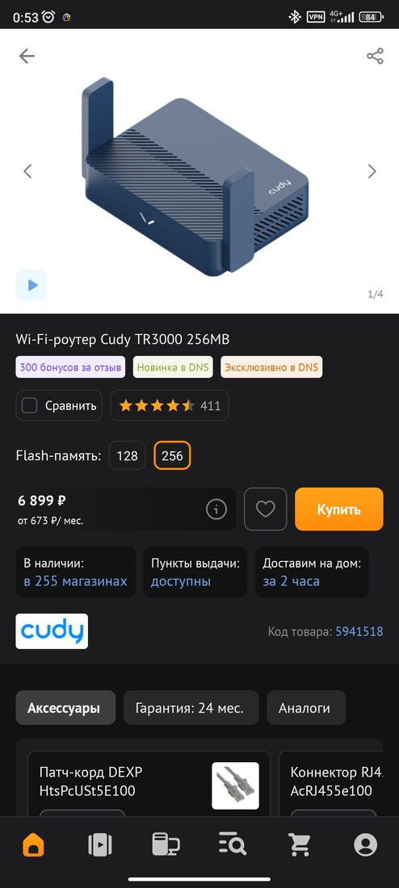
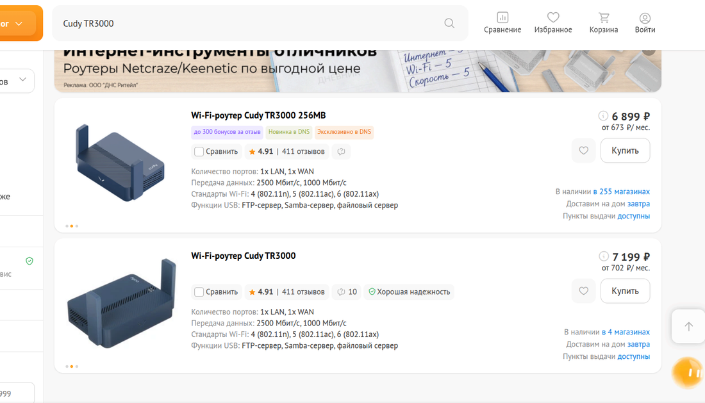
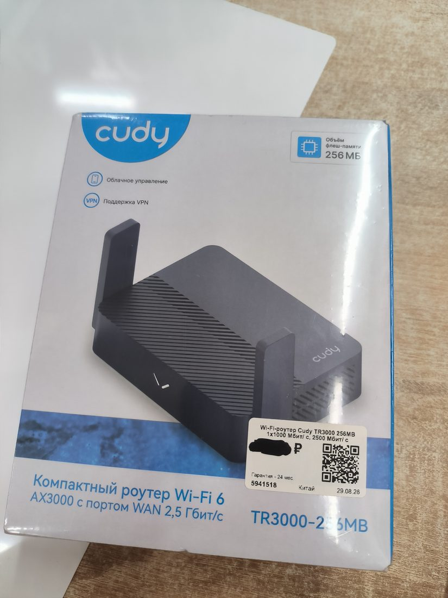
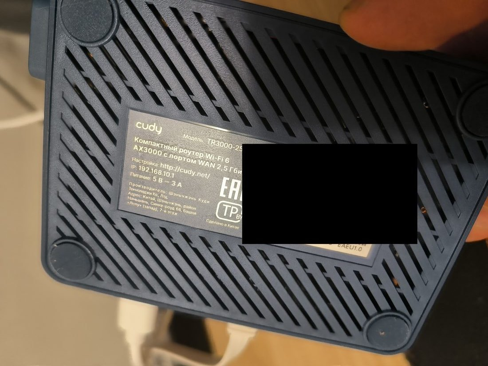

Здесь теория заканчивается и начинается настоящий проект - реальная
покупка, реальные фотографии, честная цена (кроме самой суммы - она замазана).
Зачем вообще покупать отдельный роутер
Теория. У большинства провайдер уже выдаёт роутер вместе с интернетом - им можно
пользоваться и ничего больше не покупать. Отдельный роутер имеет смысл, когда хочешь больше
контроля: сменить прошивку на другую (об этом - в зелёном маршруте дальше), выбрать модель
подороже или помощнее, или просто иметь устройство, которое принадлежит тебе, а не провайдеру.
Это выбор, а не обязательный шаг.
На что смотреть при выборе
Теория. В карточке товара обычно пишут: сколько портов (LAN - для проводов внутри дома,
WAN - для провода от провайдера), какие стандарты Wi-Fi поддерживает, сколько флеш-памяти
внутри. Флеш-память здесь важна отдельно: если в будущем захочешь поставить на роутер
альтернативную прошивку (зелёный маршрут этой книги), то не на любой модели это вообще
возможно - и не любого объёма памяти хватит. Это стоит проверять до покупки, а не после.

Карточка товара в приложении магазина.

Та же модель на сайте - для сравнения цены и характеристик.
Пример. В этом проекте выбрана модель с 256 МБ флеш-памяти, а не с 128 МБ, которая
стоила дешевле - младшая версия для планов на альтернативную прошивку впритык или не подходит
вовсе. Смотреть на цифры в характеристиках оказалось важнее, чем на цену.
Осторожно с путаницей. В карточках товара "256 МБ" иногда пишут про оперативную память
(RAM), а иногда про флеш-память (постоянное хранилище, где и живёт прошивка) - это разные вещи,
и для смены прошивки важна именно вторая. На коробке этой модели есть отдельный значок с
подписью "Объём флеш-памяти" - если пишут явно, сомнений не остаётся; если нет - стоит уточнить
отдельно, а не полагаться на одну цифру в заголовке.
Распаковка
Теория. На самой коробке обычно печатают серийный номер (SN) и MAC-адрес - это заводской
идентификатор устройства, у каждого экземпляра свой. Пригождается редко (например, при
обращении в поддержку), но полезно знать, что это за цифры, если попадутся на глаза.

Коробка, лицевая сторона (цена на наклейке замазана - не тема курса).
Теория. На дне почти любого роутера есть наклейка с адресом для первой настройки -
обычно локальный IP вроде 192.168.1.1 или 192.168.10.1 (это и есть
IP-адрес из главы 2, только служит он не сайту, а веб-странице настроек внутри самого
роутера). Там же часто печатают имя Wi-Fi-сети и пароль по умолчанию - его в первую очередь и
стоит сменить после первого входа, ровно потому что он напечатан открытым текстом и известен
всем, у кого такая же модель.

Наклейка на дне. Пароль Wi-Fi и серийный номер на фото закрашены нарочно - это
настоящий, а не примерный пароль, поэтому в курс он не попадёт.
Проверь себя.192.168.10.1 на наклейке - это IP-адрес или доменное имя,
как google.com из главы 2?
ОтветIP-адрес - обычный
числовой адрес, только не сайта в интернете, а самого роутера в локальной сети. DNS здесь не
участвует, потому что за пределы дома этот адрес никогда не выходит.
Отсюда маршрут раздваивается. Следующая глава (4, «своя сеть дома») общая для обоих
путей - подключение роутера и первая настройка одинаковы независимо от дальнейших планов. А вот
после неё дороги расходятся:
🟡 Жёлтый маршрут Без прошивки и без своего сервера - глава 5, безопасный и
обратимый вариант.
🟢 Зелёный маршрут Прошивка, свой сервер за границей, свой VPN - главы 6-11,
рискованный шаг (роутер можно на время или насовсем испортить) с явным предупреждением
перед стартом.
Ты понял тему, если можешь:
объяснить своими словами, зачем вообще может понадобиться свой роутер, а не тот, что от
провайдера
сказать, почему объём флеш-памяти иногда важнее цены
объяснить, что за IP-адрес обычно печатают на наклейке снизу и зачем менять пароль по
умолчанию